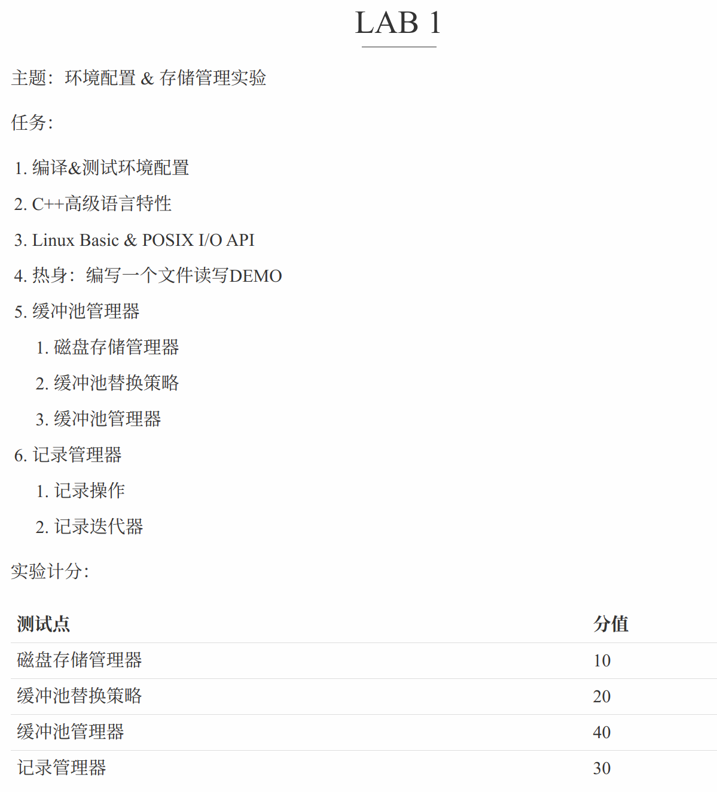

今天突然就上强度了。实验课是让我们设计一个简单的RDBMS原型系统。（本质上就是参考的CMU15-445课程和StanfordCS346的课程）我觉得还是蛮有趣的，开一个系列来记录实验过程。
本篇是Lab 1，存储管理部分的内容。
课程目标：

一. 安装Docker以及基本操作
为了简化实验过程，尽可能的避免复杂的环境配置过程。助教推荐我们使用Docker，这样直接就能使用他配置好的环境。
1. Docker是什么
根据我浅薄的理解，Docker就是虚拟机。装一个Docker，下载网上的镜像，然后把实例化为一个容器。此时容器就是一台虚拟机了。
2. 如何安装Docker
先安装wsl，wsl是在window下的linux子系统功能。本人Win11电脑，先在“启动或关闭Windows功能”里打开“虚拟机平台”和“适用于Linux的Windows子系统”，然后终端里输入wsl update，更新完后再输入wsl --install -d Ubuntu，设置好Ubuntu用户名和密码后退出即可。
然后下载Docker Desktop，下载好后不要安装。因为默认路径是C盘，后续可能会很占空间。通过软链接的方法把Docker装到D盘，终端里输入（记得用管理员权限）：mklink /j "C:\Program Files\Docker" "D:\app\Docker"（如果报错没找到文件夹则在目标路径下自己新建文件夹后再执行）。
点击安装包，一路Next。安装好后在Docker设置里的Docker Enginel里改变源：
1 | { |
至此，Docker就安装好了。
3. Docker的基本操作
Docker里有三种东西，镜像、容器、仓库。
镜像(image)是类似模板的东西，是一个只读文件。可以用来创建容器。
容器(container)就是我们操作的“虚拟机”，它需要根据镜像实例化出来。
仓库(repository)就是存储镜像的地方，我们通常可以从三个地方获得镜像：官方仓库、第三方仓库、本地
基本操作如下：
列出本地的所有镜像
- docker image ls
拉取镜像到本地
1
2
3
4
5
6
7
8
9
10
11# 拉取官方镜像
docker pull 镜像名称
例：docker pull ubuntu
# 拉取个人镜像
docker pull 仓库名称/镜像名称
例：docker pull xunmi/django
# 第三方仓库拉取
docker pull 第三方仓库地址/仓库名称/镜像名称
例：docker pull hub.c.163.com/library/mysql:latest删除镜像
- docker rmi 镜像名
- 注意删镜像时需保证此时没有容器以该镜像为模板进行实例化。
删除容器
- docker rm 容器名
- 注意删除容器时需保证该容器没有在运行。
关于管理镜像 & 容器
- 可以在Docker Desktop的Dashboard里进行管理。
二. Docker在本实验中的运用
本实验要实现一个RDBMS，所以代码基本框架可以从助教发布的GitHub上clone到本地。但是当你完善了代码，如何知道自己对不对呢？肯定要测评嘛，以及编译这个RDBMS应该怎么办呢？比如代码用到了C++17的特性但是本地编译不了就很尴尬。所以需要Docker，助教发给我们一个镜像文件，我们把它实例化一个容器到本地。然后将刚刚clone下来的项目文件夹同步到容器中（也就是实现文件共享）。这样子我们就可以在本地编写程序，文件自动就会同步到容器中，编写完成后。通过Docker进入容器中，编译程序并进行测评，查看自己编写的程序是否正确。
1. 初次配置流程：
- 下载助教发的base-env.img镜像文件到本地，cd到img所在文件夹，在终端里输入docker image load --input ./base-env.img拉取镜像到Docker中。（或者直接docker pull cc0de/base-env:1.0）
- 将助教上传到GitHub的项目文件夹clone到本地，我自己的路径是：D:/Projects/dbProjects/lab1/UniBase(UniBase是clone下来的文件夹)
- cd到lab1下，在终端里输入docker run -itd -v .\UniBase:/mnt/UniBase --name unibase-env base-env。这句话的意思就是将名为base-env的镜像文件实例化为一个容器到本地，名字起为unibase-env。并且将当前目录下的UniBase文件夹同步到unibase-env容器中/mnt下的UniBase文件夹。（mnt文件夹是wsl子系统与宿主系统进行文件交互的文件夹）
- cd到UniBase下，输入git submodule init和git submodule update来拉取子模块(google test)
- 如果需要进容器，输入docker exec -it unibase-env /bin/bash。如果退出，输入exit。
2. 编写流程：
- 先在本地，用vscode写好程序
- 进容器docker exec -it unibase-env /bin/bash，进UniBase里，新建一个build文件夹，在里面运行：cmake .. -DCMAKE_BUILD_TYPE=Debug，就可以生成整个项目的编译文件，然后make 某个module，比如make disk_manager_test，就会编译这个模块并在/build/bin里生成可执行文件，进入bin里运行它就可以看到评测信息。